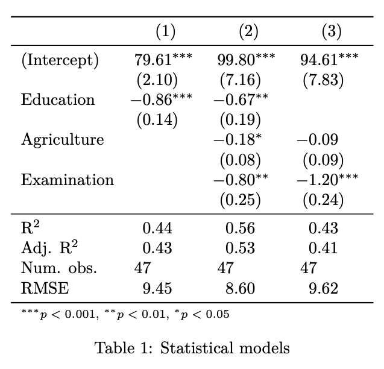
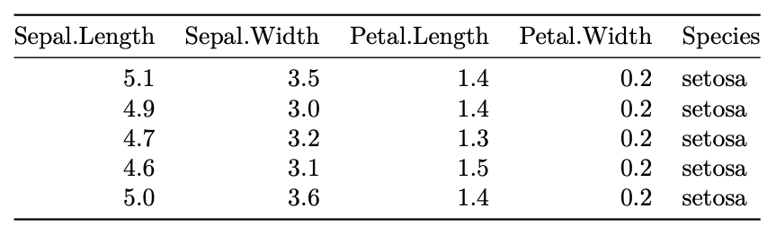

7 Visualizing statistical output
We had a first look at linear regression in the last lesson. Today, we are build on it in two ways. First, we discuss some possibilities to turn regression output into beautiful tables in your RMarkdown report. Second, we explore extensions to the linear regression model, to make it a more powerful and statistically accurate tool to capture linear relationships in data.
7.1 The broom package
In the first few lessons of this course, through dplyr and ggplot, we explored powerful tools to manipulate data frames. Because we are getting good at it, we want to use this knowledge to work with regression output (or any model output) as well. The broom package tries to help, by turning any model output into a familiar data frame. For more information on the broom package, check out the vignette
broom is an attempt to bridge the gap from untidy outputs of predictions and
estimations to the tidy data we want to work with. It centers around three
methods, each of which take common objects produced by R statistical
functions (lm(), t.test(), nls(), etc) and convert them into a data
frame. broom is particularly designed to work with the dplyr package.
broom provides three functions that do three distinct kinds of tidying.
tidy: constructs a data frame that summarizes the model’s statistical findings. This includes coefficients and p-values for each term in a regression, per-cluster information in clustering applications, or per-test information for multtest functions.augment: add columns to the original data that was modeled. This includes predictions, residuals, and cluster assignments.glance: construct a concise one-row summary of the model. This typically contains values such as R^2, adjusted R^2, and residual standard error that are computed once for the entire model.
To see it in action, consider our simple linear regression from last lesson:
We saw that the summary() function prints an overview of the regression:
##
## Call:
## lm(formula = Fertility ~ Education, data = swiss)
##
## Residuals:
## Min 1Q Median 3Q Max
## -17.036 -6.711 -1.011 9.526 19.689
##
## Coefficients:
## Estimate Std. Error t value Pr(>|t|)
## (Intercept) 79.6101 2.1041 37.836 < 2e-16 ***
## Education -0.8624 0.1448 -5.954 3.66e-07 ***
## ---
## Signif. codes: 0 '***' 0.001 '**' 0.01 '*' 0.05 '.' 0.1 ' ' 1
##
## Residual standard error: 9.446 on 45 degrees of freedom
## Multiple R-squared: 0.4406, Adjusted R-squared: 0.4282
## F-statistic: 35.45 on 1 and 45 DF, p-value: 3.659e-07But this is tedious to work with. It is much easier to have the regression
output in a data frame. To extract the information on the coefficients, use
tidy():
## # A tibble: 2 x 5
## term estimate std.error statistic p.value
## <chr> <dbl> <dbl> <dbl> <dbl>
## 1 (Intercept) 79.6 2.10 37.8 9.30e-36
## 2 Education -0.862 0.145 -5.95 3.66e- 7augment() returns statistical information on the observations, such as
resiudals and predicted values:
## # A tibble: 47 x 10
## .rownames Fertility Education .fitted .se.fit .resid .hat .sigma .cooksd
## <chr> <dbl> <int> <dbl> <dbl> <dbl> <dbl> <dbl> <dbl>
## 1 Courtela… 80.2 12 69.3 1.39 10.9 0.0215 9.41 1.51e-2
## 2 Delemont 83.1 9 71.8 1.41 11.3 0.0222 9.40 1.65e-2
## 3 Franches… 92.5 5 75.3 1.63 17.2 0.0297 9.18 5.23e-2
## 4 Moutier 85.8 7 73.6 1.49 12.2 0.0250 9.37 2.20e-2
## 5 Neuvevil… 76.9 15 66.7 1.50 10.2 0.0251 9.42 1.55e-2
## 6 Porrentr… 76.1 7 73.6 1.49 2.53 0.0250 9.54 9.41e-4
## 7 Broye 83.8 7 73.6 1.49 10.2 0.0250 9.42 1.54e-2
## 8 Glane 92.4 8 72.7 1.44 19.7 0.0234 9.07 5.32e-2
## 9 Gruyere 82.4 7 73.6 1.49 8.83 0.0250 9.46 1.15e-2
## 10 Sarine 82.9 13 68.4 1.41 14.5 0.0222 9.29 2.74e-2
## # … with 37 more rows, and 1 more variable: .std.resid <dbl>Finally glance() returns summary statistics that are valid for the
regression model:
## # A tibble: 1 x 11
## r.squared adj.r.squared sigma statistic p.value df logLik AIC BIC
## <dbl> <dbl> <dbl> <dbl> <dbl> <int> <dbl> <dbl> <dbl>
## 1 0.441 0.428 9.45 35.4 3.66e-7 2 -171. 348. 354.
## # … with 2 more variables: deviance <dbl>, df.residual <int>7.2 texreg and friends
Publications in Economics usually require regression outputs to be in a specific form. The texreg package gives you professional regression output for publications out-of-the box. (There is an alternative solution, stargazer, but its output has some flaws, especially when used in the PDF mode. E.g., it does not support the LaTeX booktab package.)
For a quick demonstration, consider two competing models:
m1 <- lm(Fertility ~ Education, data = swiss)
m2 <- lm(Fertility ~ Education + Agriculture + Examination, data = swiss)
m3 <- lm(Fertility ~ Agriculture + Examination, data = swiss)Wrap the model in a list() and pass them to texreg() (if you want to
produces a PDF) or to htmlreg() (if you want to produces a HTML document).
| Model 1 | Model 2 | Model 3 | ||
|---|---|---|---|---|
| (Intercept) | 79.61*** | 99.80*** | 94.61*** | |
| (2.10) | (7.16) | (7.83) | ||
| Education | -0.86*** | -0.67** | ||
| (0.14) | (0.19) | |||
| Agriculture | -0.18* | -0.09 | ||
| (0.08) | (0.09) | |||
| Examination | -0.80** | -1.20*** | ||
| (0.25) | (0.24) | |||
| R2 | 0.44 | 0.56 | 0.43 | |
| Adj. R2 | 0.43 | 0.53 | 0.41 | |
| Num. obs. | 47 | 47 | 47 | |
| RMSE | 9.45 | 8.60 | 9.62 | |
| ***p < 0.001, **p < 0.01, *p < 0.05 | ||||
Like with any table output, make sure you add the chunk option results = 'asis'. This ensures that the code produced by your function (HTML or TeX)
is interpreted as it is, not not simply printed.
doctype = FALSE and star.symbol = "\\*" are two fixes needed if HTML
content is used within RMarkdown.
There is also a version than produces a text version of the output, which is
useful for quick interactive exploration of the table:
##
## ============================================
## Model 1 Model 2 Model 3
## --------------------------------------------
## (Intercept) 79.61 *** 99.80 *** 94.61 ***
## (2.10) (7.16) (7.83)
## Education -0.86 *** -0.67 **
## (0.14) (0.19)
## Agriculture -0.18 * -0.09
## (0.08) (0.09)
## Examination -0.80 ** -1.20 ***
## (0.25) (0.24)
## --------------------------------------------
## R^2 0.44 0.56 0.43
## Adj. R^2 0.43 0.53 0.41
## Num. obs. 47 47 47
## RMSE 9.45 8.60 9.62
## ============================================
## *** p < 0.001, ** p < 0.01, * p < 0.05You can give the models a customized name:
| (1) | (2) | (3) | ||
|---|---|---|---|---|
| (Intercept) | 79.61*** | 99.80*** | 94.61*** | |
| (2.10) | (7.16) | (7.83) | ||
| Education | -0.86*** | -0.67** | ||
| (0.14) | (0.19) | |||
| Agriculture | -0.18* | -0.09 | ||
| (0.08) | (0.09) | |||
| Examination | -0.80** | -1.20*** | ||
| (0.25) | (0.24) | |||
| R2 | 0.44 | 0.56 | 0.43 | |
| Adj. R2 | 0.43 | 0.53 | 0.41 | |
| Num. obs. | 47 | 47 | 47 | |
| RMSE | 9.45 | 8.60 | 9.62 | |
| ***p < 0.001, **p < 0.01, *p < 0.05 | ||||
texreg shines when it comes to LaTeX tables, which are often used in publications. The following line will produce the LaTeX table below

However, because we are using the LaTeX packages booktabs (for nicer lines)
and dcolumn (for aligned numbers), we need to load these first and adjust
the YAML header as follows:
7.3 From data frame to output: kable
Including any kind of table in a RMarkdown document can be done with the
kable package. The kable package is super simple but sufficient in most
cases, so there is rearely a need to switch to more extensive package like
gt or xtable. Contrary to texreg, kable is smart enough to see if we want
to produce a PDF or a HTML document. To produce a simple table, just write
kable() around a data frame:
| Sepal.Length | Sepal.Width | Petal.Length | Petal.Width | Species |
|---|---|---|---|---|
| 5.1 | 3.5 | 1.4 | 0.2 | setosa |
| 4.9 | 3.0 | 1.4 | 0.2 | setosa |
| 4.7 | 3.2 | 1.3 | 0.2 | setosa |
| 4.6 | 3.1 | 1.5 | 0.2 | setosa |
| 5.0 | 3.6 | 1.4 | 0.2 | setosa |
In a PDF, the output looks like the following:

Customization can be done through the kableExtra package but the details differ for HTML and PDF. We won’t cover them here, but both are useful sources for documentation to style your tables according to your needs.